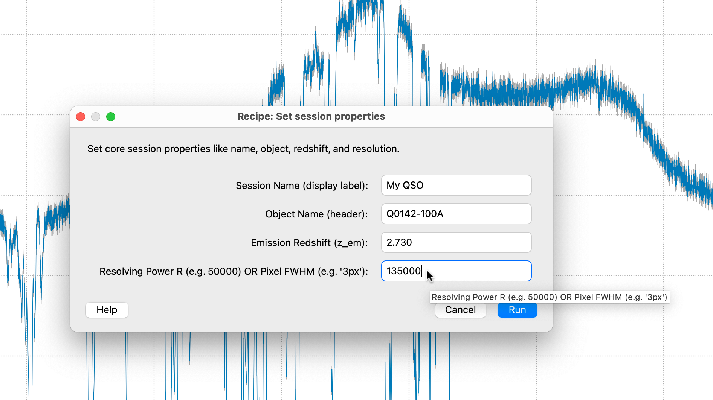
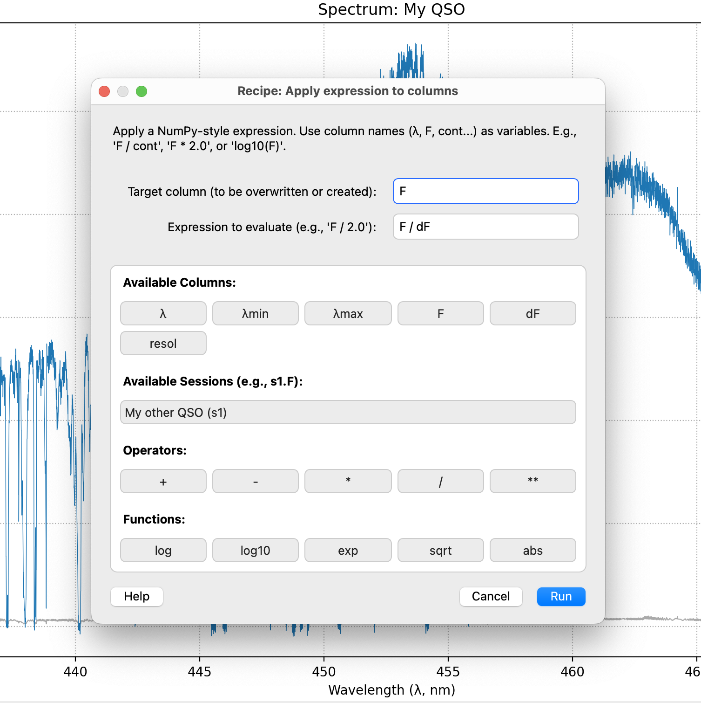
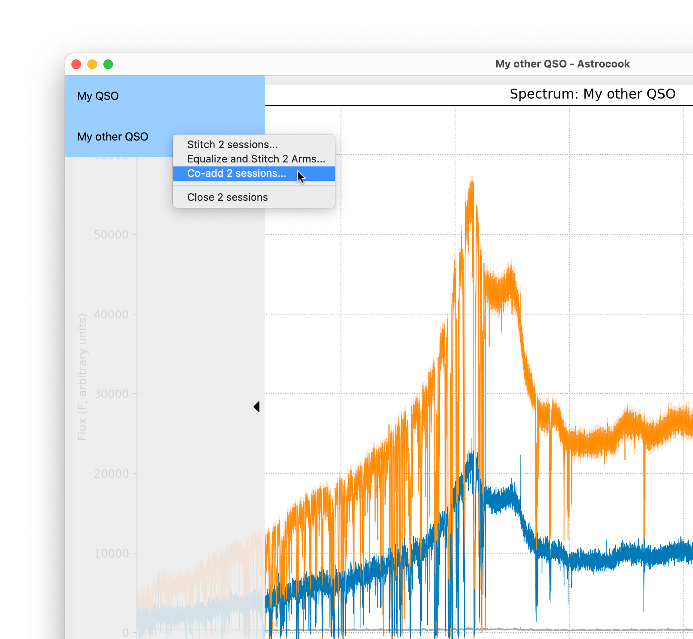

Editing Data#
Spectra rarely come ready-to-use out of the box. You might need to update metadata, rescale flux values, isolate specific regions, or combine multiple exposures. This tutorial covers the Edit menu, which serves as the “Swiss Army knife” for these operations.
1. History Management (Undo/Redo)#
Astrocook tracks every operation you perform in a session. If you make a mistake or want to test a different parameter:
Undo: Press
Ctrl+Z(orCmd+Z) or select Edit > Undo.Redo: Press
Ctrl+Y(orCmd+Shift+Z) or select Edit > Redo.
2. Setting Session Properties#
Before running complex algorithms, ensure your session metadata is correct. Many Astrocook recipes (like the Ly-\(\alpha\) forest analysis) rely on the emission redshift (\(z_\mathrm{em}\)) to determine rest-frame wavelengths.
Select your session in the Session List (left sidebar).
Go to Edit > Set Properties….
A dialog will appear. Here you can update:
Name: The label used in the list.
Object: The target name (often from the FITS header).
Emission Redshift (\(z_\mathrm{em}\)): Set this carefully!
Resolution (\(R\)): You can enter a resolving power (e.g.,
50000) or a pixel width (e.g.,3px).

3. Arithmetic on Columns#
Astrocook allows you to perform mathematical operations on any data column (Flux F, Error dF, Wavelength λ, etc.) using NumPy-style syntax.
General Arithmetic#
You can modify existing columns or create new ones.
Go to Edit > Apply Expression….
Target Column: Enter the name of the column to overwrite (e.g.,
F) or create (e.g.,F_corr).Expression: Enter your formula (e.g.,
F * 1e17).Click Run.
Tip
The recipe dialog features toolbars above the input fields. Click buttons like F, λ, log10, or sqrt to instantly insert them into your expression syntax error-free.
Creating New Columns#
You can also create new auxiliary columns. For example, to create a column representing the Signal-to-Noise Ratio:
Target Column:
snr(A new name).Expression:
F / dF.Once created, you can visualize this new column using the Aux. Column dropdown in the Plot Controls.

4. Advanced Operations#
The Edit menu provides specialized tools for cleaning and organizing your data structures.
Masking Data#
To exclude bad data points (e.g., dead pixels or negative errors) without deleting rows:
Go to Edit > Mask by Expression….
Target Column: The column to mask (e.g.,
F).Expression: A boolean condition (e.g.,
dF <= 0orλ < 350).Values satisfying this condition will be set to
NaN.
Smoothing Single Columns#
While the Flux menu smooths the whole spectrum, you might want to smooth only a specific auxiliary column (like a noise array or a background fit).
Edit > Smooth Column…: Applies a Gaussian filter to a specific target column (e.g.,
running_std).
Deleting Elements#
To clean up your session:
Edit > Delete Elements…: Enter a comma-separated list of items to remove.
Column names (e.g.,
cont,snr) to remove data arrays.Keywords
linesorsystemsto clear the entire absorption system list.
Importing Systems#
If you have analyzed the same object in a different session (e.g., a different exposure), you can copy its absorption lines to the current one.
Go to Edit > Import Systems….
Source Session: Select the other open session by name.
Append: Check this to add to your current list; uncheck to replace it entirely.
5. Slicing Sessions (Split & Extract)#
Sometimes you only want to work on a specific piece of a spectrum, such as the Ly-\(\alpha\) forest or a specific metal line.
Manual Split#
To extract a custom range into a new session:
Go to Edit > Split Out Region….
Enter a boolean expression. Use the dialog toolbar to insert the wavelength variable
λ.Example:
(λ > 400) & (λ < 500)
A new session containing only that data range will appear in your list.
Quick Extraction (Presets)#
Astrocook knows standard quasar regions. If your \(z_\mathrm{em}\) is set:
Go to Edit > Extract Preset Region….
Region: Choose a preset (e.g.,
lya_forest) or enter multiple presets separated by commas to extract them all at once (e.g.,lya_forest, red_side).The software automatically calculates the observed bounds and creates new sessions for each region.
Note
This recipe requires Emission Redshift (\(z_{em}\)) to be defined. If missing, Astrocook will automatically prompt you to set them via the Set Properties dialog before proceeding.
6. Combining Sessions (Stitch & Co-add)#
If you have multiple exposures of the same object, you can combine them directly from the Session List.
Co-adding Spectra#
This operation defines common grid and rebins all spectra at once into it (weighting the contributions by their inverse variance and the amount of overlap with the final bins).
Load all the spectra you wish to combine.
In the Session List, hold
Ctrl(orCmdon Mac) and click to select multiple sessions.Right-click on the selection.
Choose Co-add N sessions….
A dialog will ask for the grid parameters (e.g., step size
dx).A new, combined session will be created.
Note
You can also access this tool via Edit > Co-add Spectra…. This opens a dialog where you can manually type the names of the sessions to combine (comma-separated), which is useful for scripting.
Stitching#
If you have spectra covering different wavelength ranges (e.g., Blue and Red arms of a spectrograph), use Stitch:
Select the sessions as above.
Right-click and choose Stitch N sessions….
This concatenates the data arrays without resampling.
Note
The recipe automatically cleans up
NaNvalues (e.g., gaps between detectors) to ensure the resulting plot is continuous and does not suffer from “scatter-plot” artifacts.
Equalize and Stitch Arms#
When working with multi-arm spectrographs (like X-Shooter), the flux calibration between adjacent arms (e.g., UVB and VIS) might slightly mismatch in the overlap region. This tool automatically scales the flux and stitches the arms at precise cut-off wavelengths.
Load the \(N\) sessions representing your spectral arms.
In the Session List, hold
Ctrl(orCmdon Mac) and click to select them.Right-click and choose Equalize and Stitch N Arms….
A dialog will appear asking for exact parameters to guide the combination:
stitch_wavelengths: Enter the precise wavelengths (in nm) where one arm should stop and the next should begin (e.g.,
550, 1000). You must provide exactly \(N-1\) values.equalize_ranges: (Optional) Specify the exact overlap window (e.g.,
545-555, 995-1005) Astrocook should use to calculate the flux scaling factor. Leave asautoto attempt a global match.manual_factors: (Optional) If you already know the exact flux multipliers, enter them here to override automatic calculation.
Astrocook automatically sorts the arms from bluest to reddest before processing, ensuring a mathematically continuous final spectrum.

Resolution Tracking during Operations#
When combining multiple spectra, Astrocook rigorously tracks instrumental resolving power (\(R\)) pixel-by-pixel:
Stitching: When stitching spectra end-to-end, their respective
resolcolumns are seamlessly concatenated.Co-adding: When co-adding overlapping spectra, Astrocook calculates the new effective resolution using an Inverse Variance Weighted (IVW) average of the input resolutions (weighted by \(1/R^2\)). Because co-addition combines signals in parallel, the lower-resolution data will safely dominate the overlap region, preserving the physical accuracy of the Line Spread Function.
Safety First: To prevent scientifically invalid models, co-addition enforces an “all or nothing” rule. If you attempt to co-add a mix of spectra where some have known resolutions and others do not, Astrocook will warn you and safely drop the
resolcolumn from the final output.